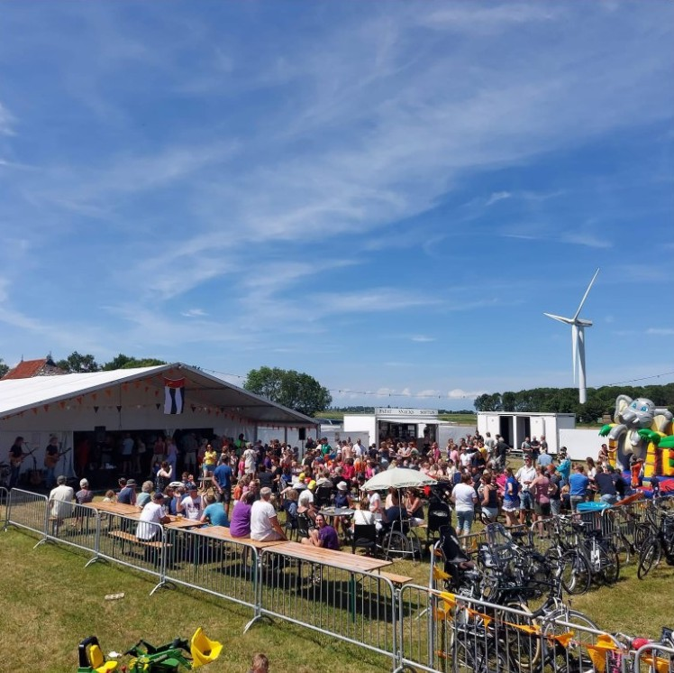
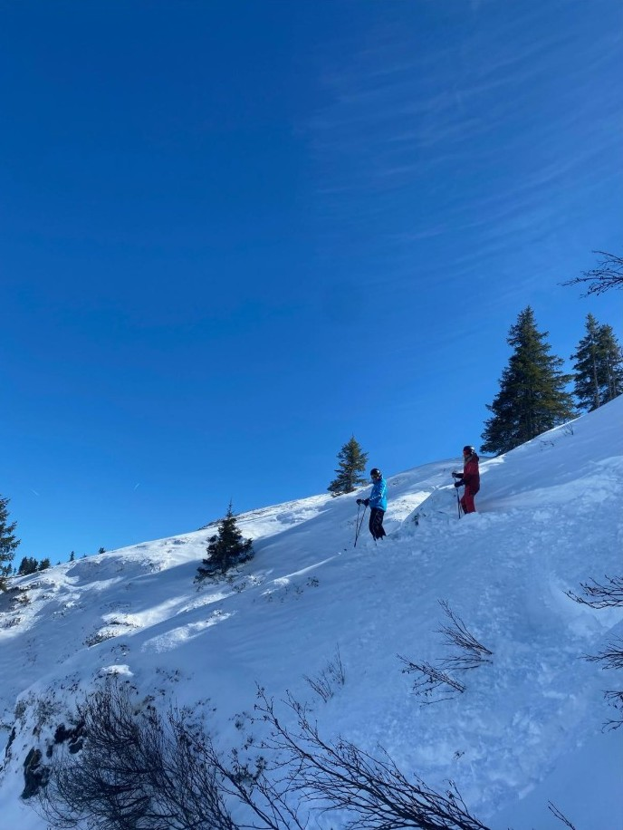
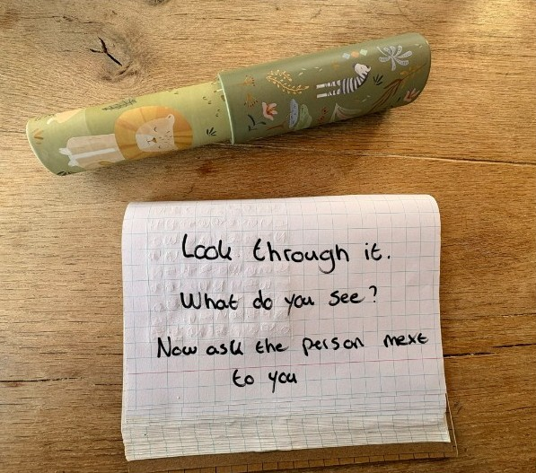

Chapter 1
Who I am
Five pieces turned inward: the compass applied to myself.
In this chapter I look at myself. My five stories show where my way of leading comes from: Warns, my family, my old coach Daniel, my time as a ski instructor in Austria and a difficult year in Groningen (1.1). Along the way, my view of a good leader changed. At the start, I admired a leader like Daniel, who is confident and decides alone. Now I want to ask first, then decide and explain why. My pitch (1.2), my learning question (1.3), the serious games (1.4) and my 80,000 hours (1.5) each show a part of that change.
1.1
The Moral Compass portfolio
1.1.1 The five stories.
My five stories come from the storytelling sessions. East: Genius Loci and Family Shield. West: Mentorship and Call to Adventure. South: Crisis.
Story 1
Genius Loci, Warns
I am from Warns, a small village with a lot of farmers and farmland. It lies close to the water, and in summer it gets busy with people on boats. It is a place where everyone knows everyone. Social cohesion is high and news travels fast. People make small talk and check in on each other. The clearest example is the village festival. You see so many different people there. Not everyone literally knows each other, but you can walk around for a whole day and still not have talked to everyone you know. That is when you really notice how strong the social cohesion is.


Note. Own photo.
Warns is also a proud village. People are proud of QVC, our football club, where I play myself and which works together with Stavoren, proud of being farmers, even those who are not, like me, and proud of our own language, Frisian. I think this shaped me. I am a social person, I talk easily with people, and I like to think I am approachable.
Warns is also the world I now lead in. I work as a shift supervisor at Plus Stavoren, close to Warns, and I play and coach at QVC. That is not always easy. Giving instructions to my friends at the Plus sometimes feels like asking a lot. And some boys who play at QVC and work under me at the Plus do not always take me seriously. When that happens, I usually laugh along with them for a moment, but I still remind them that the work has to be done. Often I also explain what I am going to do.
Why on East
This story belongs on East because it describes the place I was given, not the place I chose. Warns is the social environment that shaped how I deal with people, and it is still the environment I lead in, where people know each other inside and outside work.
Story 2
Family Shield
I grew up with my twin brother, my younger brother and my parents. We moved to Warns when I was two, so it is the only place I really remember as home. At home, three sentences came back again and again. “If you get stuck, I always want to help you.” “Don’t talk nonsense, always tell the truth.” “Be kind to each other.” Helping, honesty and kindness are the values on my family shield.
The shield also has a shadow side. I hardly knew my father’s side of the family, apart from my aunt. My father had a bad relationship with his parents, so that part of the family was mostly missing from my childhood. Luckily, it did not affect me much. My father was always open about it. He did not get along with his father, so we hardly ever saw him. Sometimes I found that a pity, because I was curious what my grandparents on that side were like. Looking back, my father’s openness is the value “always tell the truth” in practice.
I would not change the values on the shield, because I still stand behind all three. What I would add is my own motto: family is the most important thing you have, so cherish it. Maybe that comes exactly from the side of the family I missed.
Why on East
This story belongs on East because my family was the first environment I grew up in, and these values were given to me before I could choose them. It is also still the environment I fall back on. When I doubted going to Austria and when things went wrong in Groningen, it was my family that was there (see Stories 4 and 5).
Story 3
Mentorship, Daniel
Daniel Ybema was my coach and trainer in the under 17 and under 19. He stood in front of the group with confidence, explained things clearly and always knew what he wanted. One day the head coach wanted to take some of our players to the first team. Daniel asked if they would start in the first eleven. The answer was no. So Daniel made sure those players first got playing minutes in our team. It did not matter to him who he was dealing with. He stood up for his team.
The wisdom he passed on was that a leader fights for his people. What sometimes got in the way was that Daniel went too far. He fought for his team with so much passion that he sometimes lost his head. Looking back, he also decided for the players without asking what they wanted, and explained his reasons afterwards. I still admire how clear and confident he was. But today I would first ask the players, and then decide.
Why on West
This story belongs on West because Daniel passed on wisdom about leading: a leader fights for his people. Over time I also tested that wisdom against my own view, and today I would add one step, asking first.
Story 4
Call to Adventure, ski instructor in Austria
Three years ago I went to Austria to work as a ski instructor. It was scary. I came to a country with a language I did not speak well, people I did not know, and very little information beforehand. What made me go was something my mother said: “You are thinking about everything that could go wrong. But what if everything goes right? What if you have the time of your life there?”
“And you ask ‘What if I fall?’
Oh, but my darling,
What if you fly?” (Hanson, n.d.).
The resource inside me was trust, trust in my mother that she would be right. That fits the motto on my family shield: family is the most important thing you have. And she was right. I had the time of my life. I started a week with children who had never skied, and by the end of the week I skied with them in the big ski area. In my group was a boy who could not ski at all and was scared, of the slope and of the lift. He only wanted to go with me. First I asked him why he was scared. Then I explained once more how it worked, showed him that the other children could do it too, and told him I was sitting right behind him, so nothing could happen. He went. At the top of the lift he stood there shouting with joy: “Meester, ik deed het gewoon helemaal alleen!” (Sir, I did it completely on my own!) That is a moment I will never forget. That is where I found out that I get energy from seeing people grow.


Note. Own photo.
Why on West
This story belongs on West because the wisdom came from my mother: look at what can go right, not only at what can go wrong.
Story 5
Crisis, Groningen
Before this study, I studied at the ALO, the physical education teacher programme, in Groningen. I moved into a student room. At first it was fun, with a lot to do and discover. But I noticed that I was often alone in my room. That did not work for me, because I need social contact. I ended up in a downward spiral. I never really talked to anyone about it, until it became too much. I remember sitting at the table at home when my mother came in. She asked how I was doing, and I just broke. I then decided to stop the study and move back to Warns, back to my friends and everything I wanted.
Since then I have lived in Warns again. I know that everything I want is here, and I will not need to leave again. What I take most from that period is that friends are among the most important people in your life. I do not talk about it much anymore, because for me it is a closed chapter, and that is good.
Why on South
This story belongs on South because it showed me who I am: someone who needs people around him, and someone who did not talk about it when things went wrong. It also belongs partly on West, because the lesson that friends are among the most important people in your life is wisdom I gained through this experience.
1.1.2
My view of leadership, three times over
View 1. Start of the minor.
In my notes from the first lesson, I wrote that I wanted to find out what kind of leader I am, and how I can help people get the most out of themselves. The leader I would follow was someone who is confident, knows what they are doing and has experience in the subject. That looks a lot like my old coach Daniel (see Story 3). I saw myself as a leader who leads by example and keeps oversight. What I needed to develop was standing in front of a group of people I do not know well, with confidence.
View 2. During the minor.
To be honest, I did not stop to look at my view of leadership halfway through the minor. But during the film night, something did shift. We watched The Big Short, and I saw Michael Burry as a leader of the previous generation. He was confident and he was right, but I did not see him explain to the people around him why he did what he did. That made me see that confidence and knowing what you are doing, my picture of a good leader at the start, are not enough. A leader also has to be able to explain his choices.
View 3. Now, at the end of this block.
Now, a good leader for me first looks through someone else’s kaleidoscope. I ask what someone finds important or thinks they are good at, I look for myself, and then I decide and explain why. I saw how this works with a new boy in my football team. I asked him where he liked to play, saw in the warm-up that midfield fitted him better, explained it to him, and he gave two assists. I kept something from Daniel and from my first view: a leader still has to be confident and make decisions. But I now add two steps, asking first and explaining afterwards. I also learned that this counts for myself. When others know more than I do, I have to ask them, instead of trying to do everything myself. As for standing in front of people I do not know well, at the film night I was with three people I did not know, and we clicked from the first moment. The soapbox at the exhibition will be the real test.
1.1.3
The North artefact


Note. The idea of using a kaleidoscope came from a teacher. The card and the decision were developed with AI as a thinking partner.
The text that explains it.
My North artefact is a kaleidoscope with a card next to it: “Look through it. What do you see? Now ask the person next to you.” No two people see the same image. For me, this stands for what people find important. Everyone looks at work and life through their own kaleidoscope and sees something different. My stories show where this comes from. In Warns (Story 1), people check in on each other, and it is still the place where I lead people I also know outside work. My family (Story 2) taught me to help, to be honest and to be kind. Daniel (Story 3) showed me that a leader fights for his people, but he decided without asking them. My mother (Story 4) looked at my fears and asked what would happen if everything went right, and in Austria I found out that I get energy from seeing people grow. In Groningen (Story 5), what made the difference was my mother asking how I was doing. The kaleidoscope reminds me that I cannot know what someone sees unless I ask.
What I have decided
I decide to look through someone else’s kaleidoscope before I lead them. At Plus Stavoren, this means I discuss a problem with my team first, before we choose a solution. With my football team, it means I ask every player what they think they are good at, before I decide their position. And when others know more than I do, I ask them.
1.1.4
Evidence and appendices
| Evidence | What it shows | Where to find it |
|---|---|---|
| Photo of the kaleidoscope with the card | My North artefact | Figure 3 |
| Statement on the use of AI | Which parts were AI suggestions and which are my own | Appendix B |
| Photo of the village festival in Warns | The social cohesion of the place I come from (Story 1) | Figure 1 |
| Photo from Austria | Where I worked as a ski instructor (Story 4) | Figure 2 |
1.2
Your personal pitch
Ask first.
The pitch in one sentence.
Next generation leaders ask first, and make sure people can do it themselves.
Script.
My view of next generation leadership, about three and a half minutes, built around two moments: what I used to think a leader was, and where I found out what kind of leader I want to be. The content is mine; I will say it in my own words on the soapbox.
Opening, 30 seconds.
Who here has ever had a leader who decided everything for you? I did. And for a long time, I thought that was what a good leader looked like.
West, what I used to think, 1 minute.
My youth football coach, Daniel, was confident and clear, and he always knew what he wanted. Once, the head coach wanted to take some of our players to the first team, without letting them start. Daniel stood up for them and kept them with us. I admired him for that. But he decided everything for us. Afterwards he explained why, and then I usually understood. Still, I often did not like it. I would have liked it so much more if he had just asked us.
South, where I found out, 1.5 minutes.
Three years ago I went to Austria as a ski instructor. In my group was a boy who could not ski at all, and he was scared. Scared of the slope, scared of the lift. He only wanted to go with me. So I did not push him. First I asked him why he was scared. Then I explained once more how it worked, and showed him that the other children could do it too. And I told him: I am sitting right behind you, nothing can happen. He went. At the top of the lift he stood there, shouting with joy: “Meester, ik deed het gewoon helemaal alleen!” Sir, I did it completely on my own. That is a moment I will never forget. That is when I knew what kind of leader I want to be.
North, my view now, 45 seconds.
Daniel decided for us. With that boy, I did something else. I asked first. Then I explained and helped. And then I let him do it himself. I think many people feel like I did with Daniel: they understand the decision, but they want to be asked. For me, that is next generation leadership. Not the leader with all the answers, but the leader who asks first, and makes sure people can do it themselves. Thank you.
Standing by my own work.
I stand next to my North artefact, the kaleidoscope with its card. I do not explain it in the pitch, but it shows the same idea: you only know what someone else sees when you ask.
Form and slot.
Soapbox, Tuesday 3 November 2026, at 12:00.
1.3
Your learning question
From learning to doing.
My learning question, word for word:
“In this minor, I want to learn how to manage people well, how to respect cultures and help people to get the most out of themselves.”
Where it came from.
When I wrote this sentence in the first session, I wrote down the values I care about most. The clearest example comes from three years ago, when I worked as a ski instructor in Austria (see Story 4). I started the week with a group of children who had never skied before. We began on the children’s slope. I let them repeat the same exercises again and again, and when they were tired or wanted to give up, I motivated them to try one more time. By the end of the week, I skied with them in the big ski area. Seeing them grow from nothing to skiing on their own gave me energy. That is where the part about helping people get the most out of themselves comes from.
I also coach a youth football team. There I try to find out what each player is good at, defending or attacking, and put them in the position that fits. That is what I meant by managing people well: knowing your people and using them where they are strongest.
The part about respecting cultures is different. I added it because people from different cultures live and work closer together, and that matters for the next generation of leaders. But I had little experience with it myself. Looking back, that part of my question was more a gap than something I already knew.
What has happened to it since.
| Moment | What happened | What it did to my question |
|---|---|---|
| October 2026, writing this portfolio | Looking back at my question while writing my stories | Shifted from what I want to learn to how I am going to do it |
| Week 1 of the research project | Working group with many students from other cultures. Some Dutch students wanted to jump to a solution, while students from other cultures first wanted to understand the problem. I agreed with them and reminded the group to go step by step | Widened. Respecting cultures became something I did, not only a value |
To be honest, I did not work with my learning question much during the block. I wrote it in the first session and only came back to it while writing this portfolio. Still, two moments changed it. In the working group of our research project, I worked with many students from other cultures. I noticed that they first wanted to understand the problem fully, while some Dutch students wanted to jump to a solution straight away. I agreed with the first approach and reminded the group not to look for solutions yet, but to go step by step. This was the first time respecting cultures was something I did, not just something I wrote down. It also showed me that getting the most out of people can mean slowing a group down, so everyone can contribute in their own way. The second moment is now. While writing this portfolio, my question moved from what I want to learn to how I am going to do it.
Where my question stands now.
My question is not answered yet, but it has changed. When I wrote it, it was about values, what I find important in leading people. Now it is more about action. If I wrote it again today, it would be: “How can I use what I learned about managing people, respecting cultures and helping people grow in my own work at Plus Stavoren and with the youth football team I coach?”
What I know now that I did not know then is that respecting cultures is not only a value. I can use it in a group. In the working group, the students from other cultures wanted to understand the problem first, and I supported that. I also see that what I liked as a ski instructor and what I do as a coach are the same thing: helping people grow step by step.
At Plus Stavoren, I will discuss a problem with my team first, so we understand what is going wrong, before we choose a solution. This is what I did in the working group, and I want to make it a habit in my own work.
With the youth football team, I already asked a new player where he liked to play before his first match this season. He said he liked attacking, but in the warm-up I saw that he was not as fast as the other attackers. I played him in midfield and told him he could join the attack, and he gave two assists. With the players I already knew, I decided myself, based on what I had seen. But the new player showed me that what I see and what a player wants can be different. That is why, at training on Wednesday 28 October, I asked all players where they like to play and what they think they are good at. Most of them said they were good where they already played. One player wanted something else. I always put him in defence, because he kicks the ball hard and he is quite tall. He would rather play up front and score goals, because he thinks his hard kick would often go in. I explained to him why I put him in defence, and we agreed that he will play as a striker this Saturday. I still decided, but I asked first, explained why and gave him the chance to try.
I take part in the 30 EC version of the minor, so my question will keep developing in the second half.
Evidence.
Screenshot of my notes with the original learning question (Appendix A).
1.4
Reflection on the serious games
Understand the situation first.
The International Trade Game: what I did.
We played the International Trade Game in week 1 of the minor. The group was split into six teams, the “countries”. Every country got an envelope that could hold paper, pencils, scissors and rulers. You earned money by cutting shapes from the paper and selling them to the bank, at prices that went up and down. When we found out that not everyone had the same things in their envelope, our group had a lot of paper but no scissors. I went to all the other countries first. They all asked very high prices for their scissors. I went back to my group and discussed it with them. My plan was to use a pair of scissors for a set time instead of buying one, so to rent it. That became possible when we got the doubler, a token you could put on one sheet of paper to double its value. I also noticed that I wanted our country to work in a structured way. One person started making triangles from our paper, and I went with someone else to negotiate for scissors to rent.
What I would not have predicted.
I am always very enthusiastic in games like this and want to get to work straight away. I did not know the people in my group yet. Still, I first went round all the countries, discussed a plan with my group and divided the tasks, instead of just starting.
Change Journey: what I did.
In Change Journey, our team was a consultancy firm. A nursery school was in trouble, and we had to talk to all the stakeholders and then present a plan to Sod, a toddler, in three minutes and in a very simple way. Someone in our group again started thinking of solutions straight away and began working on a poster. I tried to first interview all the stakeholders, and only then come up with a solution. After every interview, that one person went straight back to solutions. After I said it twice, the group went along with me. I also tried to make the group wait with searching for pictures for the poster.
What this says about my leadership.
In both games I wanted to understand the situation first. I went round all the countries before we traded, and I wanted to interview all the stakeholders before we chose a solution. I find that unstructured teamwork works badly. I like it when everyone is on the same line about how we work, and stays there. That is also what I propose for the restocking team at Plus Stavoren (see 3.2). On the compass, I stood on East: first finding out what the situation asks of us.
Evidence.
The assignment card, the letter from Sod and our team’s poster from Change Journey (Appendix D).
1.5
Your 80,000 hours
Yes, but only if people grow.
About 80,000 working hours lie ahead of me. Three paths are realistically open: a master in sustainable entrepreneurship, a job in HR, or my own company that implements AI systems for other businesses. Below I read that working life along the compass, in about 800 words.
East, the situation.
I am a second-year HRM student and recently finished my HR internship at Home Center Wolvega. After my studies, I can do a master in sustainable entrepreneurship, take a job in HR, or start my own company that implements AI systems for other businesses. The third pulls at me most. At my internship I built an HR chatbot that answers simple questions from employees. It took no one’s job. It lowered the pressure on HR, and my colleague used the time for onboarding. At home I built a trading bot. I can build these systems. The master serves mainly my own interest. In HR, employees gain when I help them grow. In an AI company, my clients and I gain, but their employees could lose work. I value helping people grow, working with AI and seeing a business grow. Dutch works councils have the right to advise on important new technology (WOR, article 25), and the EU AI Act treats AI used for decisions about hiring and managing workers as high-risk.
My central question.
Is it right for me to build a business on automating other people’s work, if what drives me is helping people grow?
West, wisdom.
Edgar Schein (1928–2023) was a professor of organisational psychology at MIT. He followed a group of MIT management graduates through the first part of their careers. When they had to make hard choices, they kept falling back on the same thing. Schein called this a career anchor, a set of talents, motives and values that you see as your own and would not give up if you had to choose (Schein, 1996). He named eight anchors, and most people have one or two. Schein speaks from organisational psychology and career theory, not from ethics. His frame shows me that my three paths are not just three jobs. They pull at two anchors. The AI company fits entrepreneurial creativity, building something of my own. HR fits service and dedication to a cause, helping people grow. So my question is not AI against HR. It is about which anchor decides when they collide. What Schein overlooks is the other side of the work. His anchors ask what fits me, not what my work does to the people on the receiving end, like the employees whose tasks I automate.
South, self-knowledge.
Schein fits because my question is a career choice, but he stops where the moral question starts. My values collide, my own business and security against other people’s growth and jobs. At first I said helping people grow weighs more. But would I turn down a client while my company needs the money? Honestly, no. Then my own needs come first. Williams’ George the chemist sharpens this. My reasoning would be that if I refuse, another AI company builds it anyway, maybe without thinking about the employees. Williams shows that this argument can justify almost anything. For me it only holds if I really do it differently. I have to look through the employees’ kaleidoscope and help the client use the freed-up time for people, like my chatbot did with onboarding. If I do not, it is a temptation, not a value. I picture Marja, 52, in 2041. For twenty years she has answered simple HR questions about leave, pay and schedules. Her employer buys my system, which takes over exactly those questions. What she needs is a chance to grow, by being retrained for another role. That also helps the client, because an employee who knows the company is often cheaper to retrain than a new one is to recruit.
North, what now.
So my answer to my central question is yes, but only if I build the business in a way that lets people grow. In the long run, I want my working life to count for making sure that when companies bring in AI, people grow instead of losing their work. The scale is big. The IMF estimates that almost 40% of jobs worldwide are exposed to AI (Georgieva, 2024). It is partly neglected, because many companies sell AI but fewer work on what happens to the employees. Whether it is solvable, I do not know; retraining helps the people it reaches. My fit is good in part. I study HRM, built an HR chatbot and lead people at Plus, but I have never run a business. MacAskill’s questions look from above and cannot see Marja, the one person whose kaleidoscope I look through. When my hours are spent, I want the people whose work I automated to be better off. I will change course if, one year after an implementation, most of the affected employees lost their jobs instead of moving to other work. Next year, I will ask my next internship to let me set up an HR chatbot. I will agree beforehand what the freed-up time is for, and check with the employees after three months. Who pays? The employees who still lose their jobs. I will advise every client to offer them outplacement through an independent recruitment agency. I cannot force it, so some may go without help, and I will be open with my clients about that risk.
What is mine to do with the time I have.
Mine to do is to bring AI into companies in a way that gives people room to grow. Within a year, I set up an HR chatbot at my next internship, agree beforehand what the freed-up time is for, and check with the employees after three months. Later, one year after each implementation for a client, I check what happened to the affected employees. If most lost their jobs instead of moving to other work, I change direction.
LO1
Chapter 1 · Who I am
How I have shown LO1
At the start, my picture of a leader was someone like my coach Daniel: confident, clear and deciding alone (1.1.2, View 1). Through my stories I found where my own way of leading comes from. Warns and my family taught me to help, to be honest and to be kind (Stories 1 and 2). The boy at the ski lift showed me what kind of leader I want to be (Story 4). In the serious games I saw that I want structure and that I first want to understand a situation (1.4). My decision is in my kaleidoscope (Figure 3) and my pitch (1.2): ask first, then decide and explain. In my 80,000 hours I took that decision into the work I want to do later (1.5).